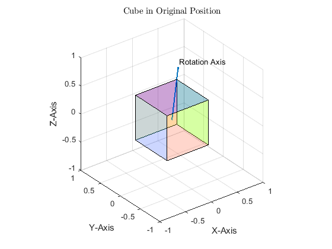
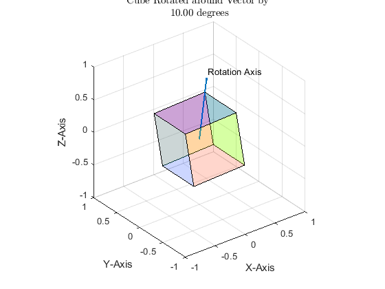

Contents
ECE 580 Project, Quaternion Examples
-------------------------------------------------------------------------
Authors: Sergio Ribeiro, Rohith Yerrabelli Date: 26-APR-2022 Class: ECE 580 Small Satellite Design
-------------------------------------------------------------------------
The purpose of this code is to test out MATLAB quaternion capabilities to use for future work on this project. MATLAB has built in quaternion capabilities specifically related to rotation problems.
-------------------------------------------------------------------------
clearvars;
clc;
clf;
format long;
Commutative Property does not Apply for Quaternions
This section demonstrates that quaternion multiplication is not commutative. Neither is it anti-commutative (i.e. A x B = -B x A). Reversing the order changes the output drastically.
q1 = quaternion(3, 5, 1, 4);
q2 = quaternion(2, 1, 5, 1);
q_12 = q1 * q2;
q_21 = q2 * q1;
disp('QUATERNIONS MULTIPLICATION IS NOT COMMUTATIVE');
disp(q_12);
disp(q_21);
QUATERNIONS MULTIPLICATION IS NOT COMMUTATIVE
-8 - 6i + 16j + 35k
-8 + 32i + 18j - 13k
Quaternion Rotation of Points
We will build a quaternion rotation system. We need to define the unit vector which will describe the axis of rotation and an angle which will describe the angle by which we rotate around such a defined axis.
% Define a rotation axis and normalize it to a unit vector rot_axis = [1, 1, 1]; rot_axis = rot_axis/norm(rot_axis); % Define our angle of rotation in degrees rot_angle = 30; % Compute the resulting quaternion associated with this rotation q_rot = quaternion(cosd(rot_angle/2), ... rot_axis(1) * sind(rot_angle/2), ... rot_axis(2) * sind(rot_angle/2), ... rot_axis(3) * sind(rot_angle/2));
Define a Flat Polygon to Rotate
In this section we will define a simple polygon shape to show how quaternion rotation works
solid_verts = 0.4 * [1, 1, 1; -1, 1, 1; 1, 1, -1; -1, 1, -1; ... 1, -1, 1; -1, -1, 1; 1, -1, -1; -1, -1, -1]; solid_faces = [1, 2, 4, 3; 5, 6, 8, 7; ... 1, 5, 7, 3; 2, 6, 8, 4; ... 1, 5, 6, 2; 3, 7, 8, 4]; figure(1) grid on hold on quiver3(0, 0, 0, rot_axis(1), rot_axis(2), rot_axis(3), 'LineWidth', 1.5); text(rot_axis(1), rot_axis(2), rot_axis(3), 'Rotation Axis'); patch('Vertices', solid_verts, 'Faces', solid_faces, ... 'FaceVertexCData', copper(6), 'FaceColor', 'flat', ... 'FaceAlpha', 0.2) axis([-1, 1, -1, 1, -1, 1]); title('Cube in Original Position', 'interpreter', 'latex'); xlabel('X-Axis'); ylabel('Y-Axis'); zlabel('Z-Axis'); view(3) axis vis3d rotate3d % Now using the rotation quaternion we defined, rotate all the solid % figures vertices. rot_verts = zeros(8, 3); rot_faces = [1, 2, 4, 3; 5, 6, 8, 7; ... 1, 5, 7, 3; 2, 6, 8, 4; ... 1, 5, 6, 2; 3, 7, 8, 4]; % We could go the long way and multiply our vectors as q_rot * r * % conj(q_rot). However MATLAB has built in routines for dealing with % quaternions quite efficiently. It would be a waste to re-derive known and % compiled code for i = 1:8 rot_verts(i, :) = quatrotate(compact(q_rot), solid_verts(i, :)); end figure(2) grid on hold on quiver3(0, 0, 0, rot_axis(1), rot_axis(2), rot_axis(3), 'LineWidth', 1.5); text(rot_axis(1), rot_axis(2), rot_axis(3), 'Rotation Axis'); patch('Vertices', rot_verts, 'Faces', rot_faces, ... 'FaceVertexCData', copper(6), 'FaceColor', 'flat', ... 'FaceAlpha', 0.2) axis([-1, 1, -1, 1, -1, 1]); title({'Cube Rotated around Vector by ', ... sprintf('%2.2f degrees', rot_angle)}, 'interpreter', 'latex'); xlabel('X-Axis'); ylabel('Y-Axis'); zlabel('Z-Axis'); view(3) axis vis3d rotate3d 